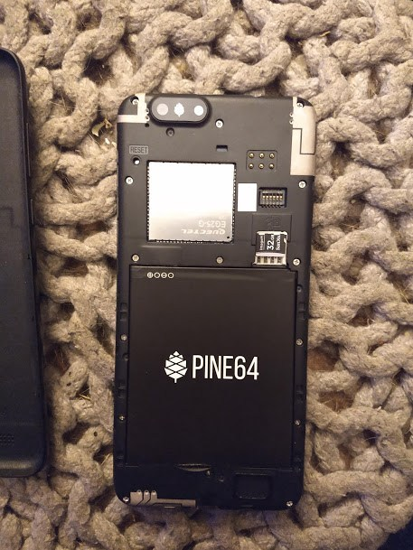
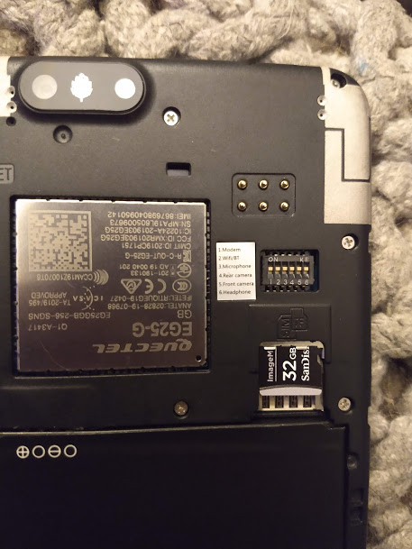

your number one source for linux phone news
~ Community | News | Operating Systems | Software | Devices | Contact Us | About Us ~
The PinePhone is quickly becoming a well-known name among mobile Linux enthusiasts and tinkerers, and its first dev kit only shipped in late 2019. Made by the creator of the single-board computers like the PINE A64, the ROCK64, and the ROCKPro64, the PinePhone comes from Pine64, who also makes ARM-powered laptops like their original Pinebook and the newer Pinebook Pro machines.
The PinePhone is something special out of the lineup, though. It represents one of the first true steps into a reality of Linux phones. Like the Librem 5, it comes with hardware killswitches, a removable battery, and user-replaceable parts.
The battery is easy to replace and can be found very affordably online. The PinePhone is compatible with batteries that fit a Samsung Galaxy J7, and you can also buy replacement PinePhone batteries directly from Pine64 if you'd prefer.
Let's take a look at the technical specifications of the PinePhone before we delve into the privacy features:
Next, let's talk about the hardware killswitches. In the case of the PinePhone, there are 6 DIP switches, and they each cut or allow power to a specific part of a device. I took a closer photo of my PinePhone's back so you could see the sticker indicating what each switch does.
The DIP switch functions on the PinePhone are as follows:
To top it all off, there will be other additions possibly coming to the PinePhone in the future, like a potential slide-out keyboard and other attachments thanks to the pogo pins on the device. There are all kinds of possibilities with this phone!
Just like a computer, you have a wide selection of operating systems available to choose for your PinePhone. To learn about all of the different operating systems that the community is building and testing for the PinePhone, check out our Operating Systems list or peruse the information graciously provided by the community at the PinePhone wiki.
You're in luck if you're looking for a PinePhone, as Pine64 is currently selling the KDE Community Edition PinePhone, which will come preinstalled with Manjaro with KDE Plasma Mobile, but you can of course use any distro you'd prefer. This edition of the PinePhone is expected to ship out in January 2021, so make sure you get your order in quick at Pine64's store.